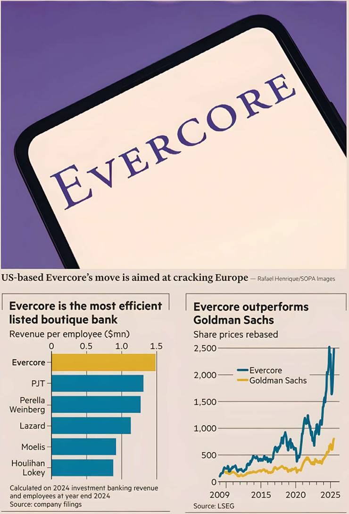

Call it the signature deal for Simon Robey and Simon Warshaw. London’s pre-eminent deal bankers yesterday announced that their eponymous firm, Robey Warshaw, would be acquired by the New York-based Evercore for a shade under $200mn.
Robey Warshaw has just five partners, but as a “kiosk” — smaller than a boutique — it has represented some of Europe’s biggest companies, including BP and AstraZeneca, in multibillion-dollar situations. For the tiny firm, that has meant annual revenue that sometimes exceeded £80mn since its founding in 2013.
Larger banks such as Evercore will often acquire small teams of dealmakers to fill a hole in the roster. Those arrangements tend to come with some guaranteed pay for a finite number of years. Robey Warshaw has, however, pulled off a rarer trick: it is getting Evercore to pay for the full enterprise value of the firm — the capitalised stream of the profits from future Robey Warshaw deal fees.
The Robey Warshaw team will still also separately get paid their annual salaries and bonuses for being employees. For Evercore, those are the rich terms — it is paying twice, in effect — of its effort to conquer European M&A.
Through aggressive poaching for the past two decades, Evercore has efficiently built an investment banking advisory business that usually ranks third or fourth in annual fees, at about $2.5bn. That puts it in the league of the much vaster Goldman Sachs, JPMorgan and Morgan Stanley. With about 150 senior bankers, that is equivalent to more than $15mn per head and ranks at the top of the sector.
Often banking hires do not pan out but Evercore is the rare firm that has consistently backed the correct horses at favourable odds. Since the start of 2009, Evercore’s share price has gone from $30 to $300 — its current market capitalisation today is more than $12bn — a performance that far exceeds the growth in the pool of deal fees.
Yet the firm remains disproportionately US-focused and, with less white space remaining in North America, the UK and France have become central to maintaining its growth trajectory. Robey Warshaw never tried to build such a multibillion-dollar business by adding scores of bankers every year. Instead, its partnership tier remained skinny, focused on a handful of large-cap clients. That meant it could pay most of its substantial profits annually to staff without having to worry about meeting margin and cost of capital requirements of third-party shareholders.
The success of this “stick to its knitting” strategy depended on its few stars, year after year, bagging elephants. The prize for succeeding is not only $200mn, but also the additional future pay the Robey Warshaw team is going to rake in.